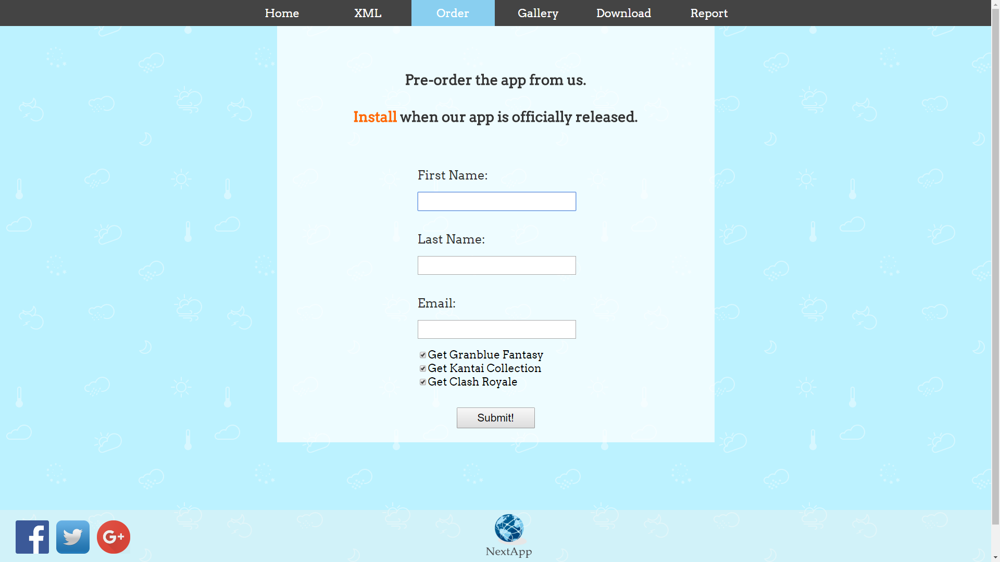

Here is my report on the assignment for Internet Application Programming. Techniques used on designing and developing this webpage will be covered in this report. Screenshots are taken from each page to describe about their functionality and usability.
The main browser I am using to develop this webpage is Google Chrome. Google Chrome is one of the most mainstream browser which supports a lot of modern feature. There are many Internet users using this browser to surf the Internet so this webpage will be most optimized on Google Chrome, Google Chrome will show the intended result of design for the webpage. Notepad++ is used as the text editor of choice upon developing this webpage. It is simple-to-use but at the same time full of useful features.
Real applications and games from real world are borrowed to use in my webpage. Respective images and icons are also used in my webpage just as placeholders. NextApp is a simple webpage without a lot of clutters in the page. It supports several feature which is needed to fulfill the business requirements such as: XML data page, Order Form page for the users to pre-order the applications, Gallery page to display a slideshow featuring the application's in-game screen. Javascript is used on the Order page to validate the user input, making sure user does not submit empty form to the server in the future.
Home page showing the company logo and the introduction to the user on the company profile and their aim and objective. Facebook, Twitter, Google Plus links are at the footer. The NextApp logo are placed in the position let the user go back to main page easier. Act as a reminder for user on the company logo too.
Clicking on the link will show the XML file, which shows the data of the applications.

This page lets the user submit their name and email so they can get first-hand info when the Beta apps are officially released. Javascript validations are used to avoid user from submitting blank forms in every field.
Javascript is used to provide this slideshow feature. Left and Right button is placed beside the image. User can click on the button to show the next image.
Download page provides some info of the application and also provide a download link (placeholder) when clicked on the icon.
| Aspect | Google Chrome | Internet Explorer | Microsoft Edge |
|---|---|---|---|
| Home | Pass | Pass | Pass |
| XML | Pass | Pass | Pass |
| Order | Pass | Pass | Pass |
| Gallery | Pass | Semi-Pass | Pass |
| Download | Pass | Semi-Pass | Semi-Pass |
| Report | Pass | Pass | Pass |
The disadvantage of the webpage is it might scale bad across different resolutions and browser size. Some of the features might not work well on browsers other than Google Chrome.
Javascript plays an important role on adding more spice and flavour onto HTML and CSS as a webpage. It is essential to have Javascript in a webpage to make it more rich in features. It can also be used to decorate the elements of the webpage and even provide function to the webpage which cannot be done by only HTML and CSS.
Good knowledge of design is very important in order to develop a website easy for the user to navigate. Navigation between pages of the website is simple and clear. So the user can reach their destinated webpage successfully without scratching their head thinking which button to press on.
Accessibility are also concerned for the disabled user such as blinded user. For example: alternate-texts are provided behind every images in the webpage.